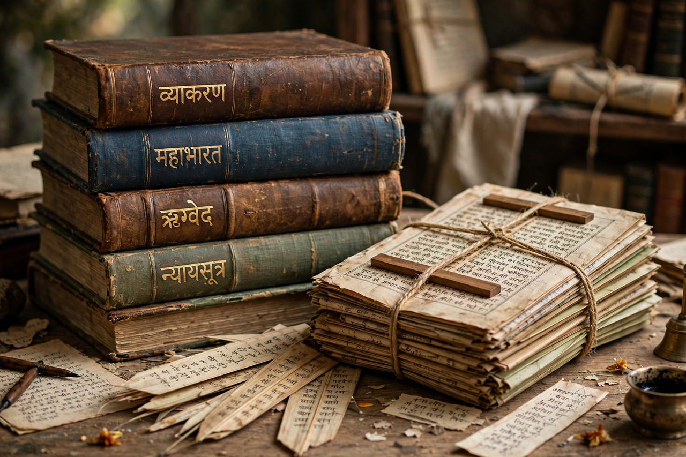

Critical Edition of the Mahabharata
The Critical Edition of the Mahabharata is a scholarly edition of the Sanskrit epic Mahabharata produced at the Bhandarkar Oriental Research Institute (BORI) in Pune, India. Undertaken from 1919 and completed in 1966, it remains one of the largest textual-criticism projects ever attempted: editors collated over a thousand manuscripts in numerous Indic scripts, from the major Northern and Southern recensions, to reconstruct the oldest recoverable form of the text and to document its variants in a detailed critical apparatus.

| Critical Edition of the Mahabharata | |
|---|---|
| Editor | V. S. Sukthankar (general editor, until 1943) and successors |
| Publisher | Bhandarkar Oriental Research Institute, Pune |
| Published | 1933–1966 (19 volumes, plus Harivamsha) |
| Language | Sanskrit, with English introductions |
| Manuscripts used | Approx. 1,259 manuscripts collated |
History
The project was conceived after European scholars, including Moriz Winternitz, urged the preparation of a critical edition comparable to those of classical Western texts. Work began at BORI in 1919 under an editorial board; from 1925 the driving force was Vishnu Sakharam Sukthankar, whose rigorous method and famous Prolegomena (1933) set out the stemmatic principles of the edition. After Sukthankar's death in 1943, the work continued under S. K. Belvalkar, R. N. Dandekar, and others, concluding with a public ceremony in 1966 attended by India's President, Sarvepalli Radhakrishnan.
Method and findings
Editors compared manuscript readings line by line, relegating passages found only in some recensions to appendices or footnotes as later interpolations. The constituted text contains about 73,000–75,000 verses (shlokas) — substantially fewer than the traditional claim of 100,000. Notably, the edition demonstrated that the beloved story of Shakuntala's ring, and the popular episode of Draupadi's disrobing in its extended miraculous form, differ considerably across recensions, while the dice game and the Bhagavad Gita stood in early textual strata.
Reception and derivatives
The Critical Edition underlies most modern translations and scholarship, including the unfinished Chicago translation project begun under J. A. B. van Buitenen and the Clay Sanskrit Library versions. A parallel critical edition of the Harivamsha, the epic's supplement, followed (1969–1971). BORI has since produced an electronic text enabling computational analysis of the epic's language and transmission.